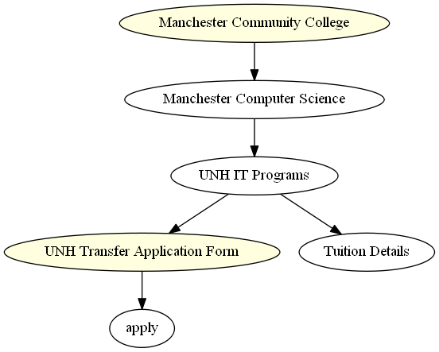

<map id="G" name="G">
<area shape="poly" id="node1" href="/transfer_college?college=mcc" title="Manchester Community College" alt="" coords="490,29,482,22,457,15,420,10,372,7,320,5,267,7,220,10,183,15,158,22,150,29,158,37,183,43,220,49,267,52,320,53,372,52,420,49,457,43,482,37"/>
<area shape="poly" id="node2" href="https://manchester.unh.edu/academics/degree-programs/information-technology?utm_source=google&amp;utm_medium=txtad&amp;utm_campaign=msit" title="UNH IT Programs" alt="" coords="425,221,420,214,405,207,382,202,352,199,320,197,288,199,258,202,235,207,220,214,215,221,220,229,235,235,258,241,288,244,320,245,352,244,382,241,405,235,420,229"/>
<area shape="poly" id="node4" href="https://manchester.unh.edu/" title="UNH Transfer Application Form" alt="" coords="352,317,343,310,319,303,281,298,232,295,179,293,125,295,77,298,38,303,14,310,5,317,14,325,38,331,77,337,125,340,179,341,232,340,281,337,319,331,343,325"/>
</map>
